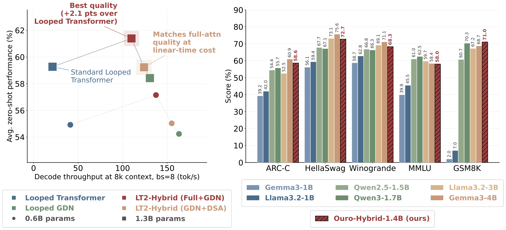
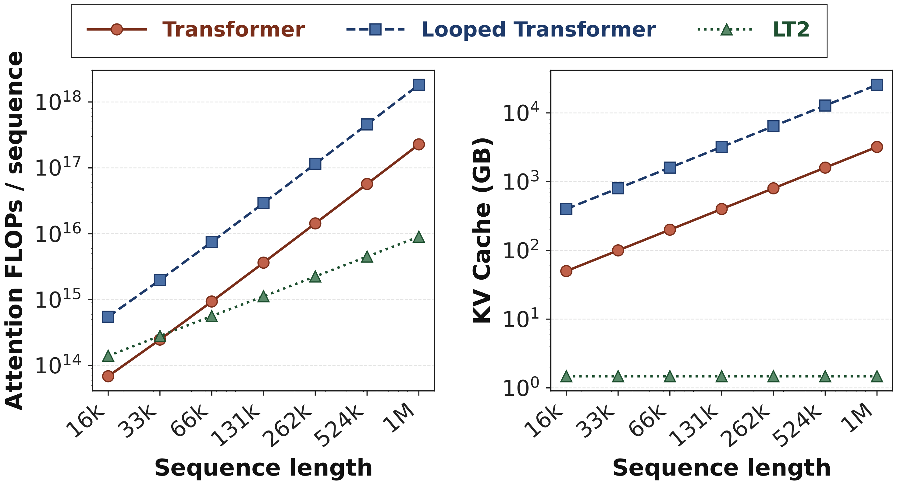
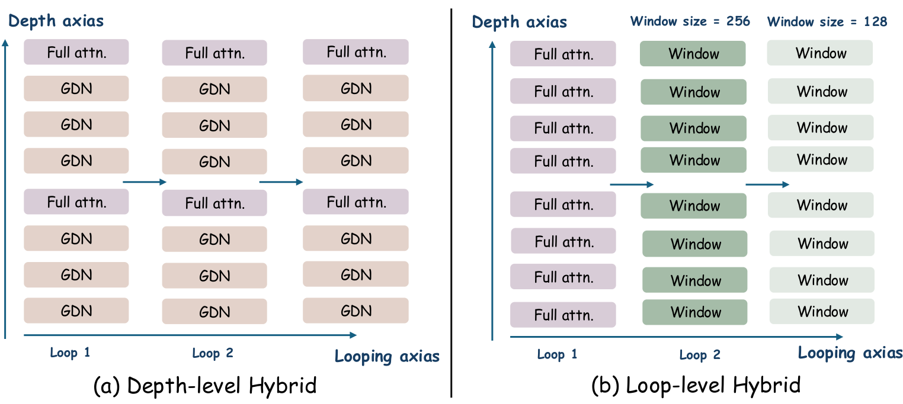
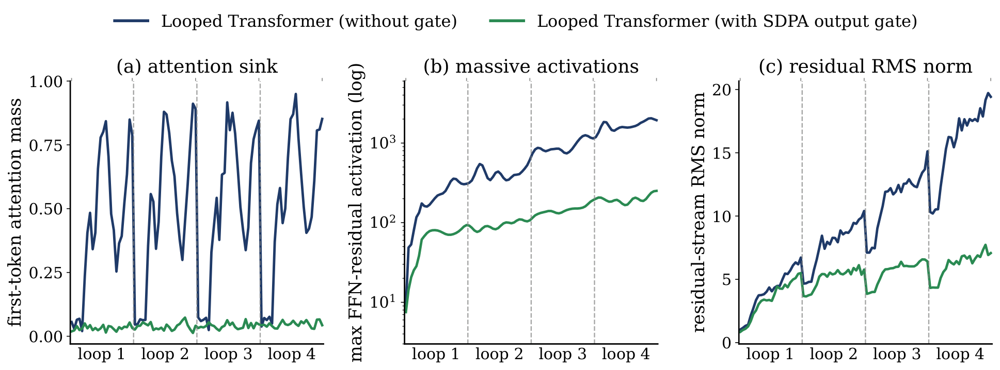
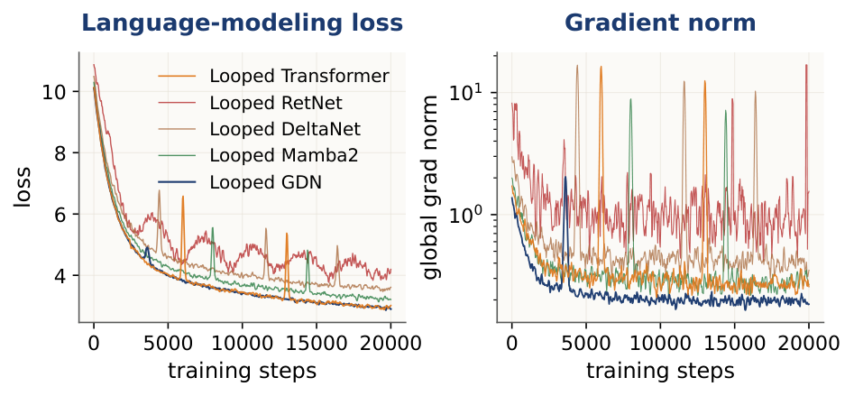
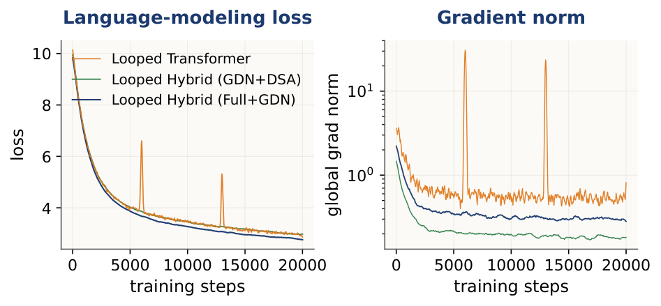
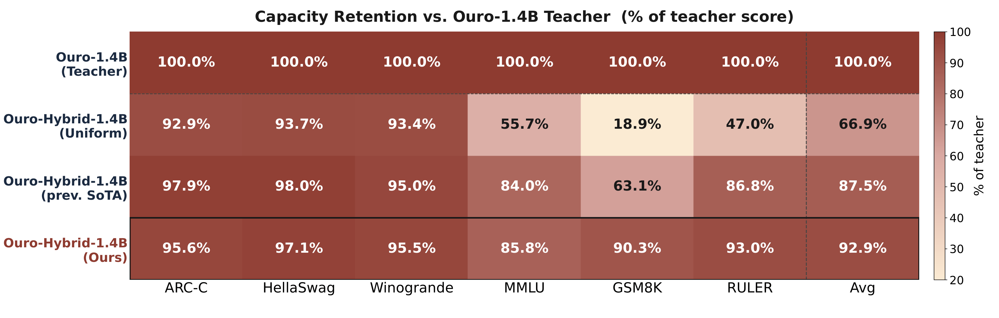
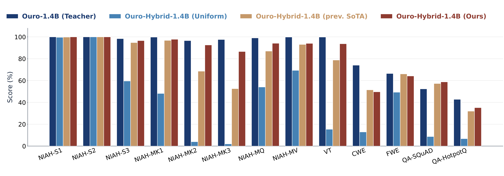

LT2: Linear-Time Looped Transformers
1 Rice University
2 Apple
3 UC Santa Cruz
4 Carnegie Mellon University

Looped Transformers (LT) are an elegant idea: instead of stacking many independently-parameterized layers, reuse the same block of weights $T$ times before producing the output token. This gives $T\times$ the effective depth at $1\times$ the parameter count — a compelling handle for parameter-efficient reasoning at inference time.
But there is a catch. Each loop re-runs full quadratic self-attention over the entire sequence. FLOPs grow as $\mathcal{O}(L^2)$ per loop iteration, and the KV-cache grows as $\mathcal{O}(T \cdot L)$ at inference. As you add more loops to get more reasoning depth, the attention cost compounds — exactly where you want to scale, the architecture becomes most expensive.
LT2 (Linear-Time Looped Transformers) asks: can we keep the looping, but cut the attention cost? We replace full softmax attention inside each loop with subquadratic token mixers — linear attention and sparse attention — and find that looping and efficient attention are not just compatible, but genuinely synergistic. The loop changes what the efficient mixer can do, not just how many times it runs.
A standard Transformer of depth $N$ stacks $N$ independently-parameterized blocks $\{\mathcal{F}_\ell\}_{\ell=1}^{N}$:
A Looped Transformer (LT) reuses these $N$ shared blocks for $T$ iterations:
yielding effective depth $T \cdot N$ with only $N$ unique parameter sets. Each $\mathrm{MHA}_\ell$ costs $\mathcal{O}(L^2)$ FLOPs and the KV-cache at inference is $\mathcal{O}(T \cdot L)$ — both scale linearly with $T$. LT2 replaces MHA with a subquadratic token mixer:
keeping the looping, weight sharing, and a learned per-loop residual gate $\mathbf{h}^{(\tau)} = \widetilde{\mathbf{h}}^{(\tau)} + \boldsymbol{\rho}_\tau \odot \mathbf{h}^{(\tau-1)}$ unchanged. Beyond efficiency, looping amplifies the expressive power of subquadratic mixers in two distinct ways.
Frontier linear-attention architectures (GDN, KDA, RWKV7) maintain a fixed-size recurrent state $\mathbf{S}_t \in \mathbb{R}^{d_k \times d_v}$ via a DPLR operator:
The matrix $\mathbf{A}_t$ is identity plus a rank-1 perturbation, so a single non-looped DPLR block can only modify recurrent memory along one direction per token. When looped $T$ times, the cumulative state-transition operator across all iterations is:
When the per-loop keys $\{\mathbf{k}_t^{(\tau)}\}$ are orthogonal (which diverse intermediate representations approach in practice), the product erases $T$ distinct directions in memory — yielding a rank-$T$ perturbation and directly multiplying the state-tracking capacity without any added parameters.
A sliding-window block with window $w$ restricts each query at position $t$ to attend only to tokens $\mathcal{I}_t^{(1)} = \{t - w + 1, \ldots, t\}$. After $T$ loop iterations, information propagates further each loop, and chaining this inductively gives:
$T$ loops reach as far back as $T$ stacked independent window-$w$ layers but with $T\times$ fewer parameters. Looping turns compute into context: a fixed local window covers arbitrary sequence lengths once $T$ is large enough.

LT2 swaps the MHA sub-layer inside the shared block with a subquadratic token mixer. The looping structure, weight sharing, and learned per-loop residual gate remain identical. We study two base variants and two hybrid families.
| Variant | Mixer | Complexity | Core benefit from looping |
|---|---|---|---|
| LT2-linear | GDN (Gated Delta Net) | $\mathcal{O}(L)$ | Rank-$T$ recurrent state update; most stable optimizer behavior |
| LT2-sparse | DSA (Dynamic Sparse Attn) | $\mathcal{O}(L \log L)$ | Effective receptive field grows to $\mathcal{O}(Tw)$ across loops |
| LT2-hybrid (GDN+DSA) Efficient | GDN + Sparse Attn | $\mathcal{O}(L)$ | Linear branch compresses; sparse branch handles precise retrieval — no full attention |
| LT2-hybrid (Full+GDN) Best Quality | Small fraction Full Attn + GDN | Near-linear | GDN regularizes the loop; sparse full-attention layers handle hard retrieval cases |

We explore both depth-level and loop-level hybridization. Depth-level — different mixers interleaved across layers in the shared block — substantially outperforms loop-level mixing. Distributing attention across depth matters more than scheduling it across time.
We evaluate zero-shot downstream accuracy across eight benchmarks (ARC-E/C, HellaSwag, PIQA, Winogrande, OBQA, SciQ, BoolQ) at two scales: 0.6B and 1.3B parameters, 100B FineWeb-Edu tokens, $T=4$ loops. D-Gate = data-dependent gating; $\Delta$ = DPLR linear variant.
Table 1. Zero-shot accuracy and perplexity across two scales. Cream rows are the best LT2 model without full attention. Bold = best per column within scale; underline = second best.
| Model | D-Gate | Δ | PPL ↓ | ARC-E | ARC-C | HellaS. | PIQA | WG | OBQA | SciQ | BoolQ | Avg. ↑ |
|---|---|---|---|---|---|---|---|---|---|---|---|---|
| 0.6B parameters / 100B tokens (8× Chinchilla ratio) | ||||||||||||
| Transformer | — | — | 13.14 | 63.09 | 30.72 | 47.43 | 69.53 | 56.24 | 35.6 | 68.2 | 50.07 | 51.34 |
| Looped Transformer (ref) | — | — | 11.92 | 67.13 | 34.67 | 53.29 | 70.58 | 62.83 | 38.2 | 73.6 | 54.87 | 56.42 |
| LT2-linear attention | ||||||||||||
| Looped RetNet | ✗ | ✗ | — | training diverged | ||||||||
| Looped HGRN2 | ✓ | ✗ | 14.59 | 59.82 | 27.93 | 43.17 | 67.34 | 52.13 | 33.4 | 65.2 | 48.53 | 49.69 |
| Looped Mamba2 | ✓ | ✗ | 12.78 | 64.53 | 31.82 | 49.87 | 69.74 | 58.63 | 35.6 | 68.8 | 51.83 | 53.86 |
| Looped DeltaNet | ✗ | ✓ | 14.16 | 60.47 | 28.53 | 44.22 | 67.87 | 53.24 | 33.8 | 65.5 | 49.13 | 50.12 |
| Looped GDN | ✓ | ✓ | 12.06 | 66.43 | 33.89 | 52.62 | 70.27 | 61.48 | 36.4 | 70.5 | 54.13 | 55.74 |
| Looped KDA | ✓ | ✓ | 12.13 | 66.12 | 33.63 | 52.37 | 70.13 | 61.22 | 36.2 | 70.2 | 53.92 | 55.49 |
| LT2-sparse attention | ||||||||||||
| Looped Window | — | — | 12.87 | 64.23 | 31.53 | 48.83 | 69.82 | 57.34 | 35.8 | 68.5 | 51.23 | 52.17 |
| Looped NSA | — | — | 12.30 | 65.57 | 32.74 | 51.43 | 70.04 | 60.32 | 36.0 | 69.5 | 53.13 | 54.84 |
| Looped DSA | — | — | 12.08 | 66.37 | 33.82 | 52.53 | 70.23 | 61.42 | 36.4 | 70.4 | 54.07 | 55.67 |
| Hybrid LT2 | ||||||||||||
| Looped Hybrid (Full+Window) | — | — | 12.24 | 65.32 | 32.13 | 51.23 | 69.86 | 58.42 | 36.0 | 69.2 | 53.13 | 54.43 |
| Looped Hybrid (Full+DSA) | — | — | 12.20 | 65.53 | 32.34 | 51.42 | 70.04 | 58.63 | 36.2 | 69.4 | 53.32 | 54.62 |
| Looped Hybrid (Full+GDN) | ✓ | ✓ | 11.43 | 69.82 | 37.34 | 55.83 | 72.62 | 64.61 | 38.9 | 73.3 | 57.74 | 58.65 |
| Looped Hybrid (GDN+DSA) | ✓ | ✓ | 11.85 | 67.43 | 34.53 | 53.42 | 70.63 | 62.92 | 37.0 | 71.2 | 55.13 | 56.53 |
| 1.3B parameters / 100B tokens (4× Chinchilla ratio) | ||||||||||||
| Transformer | — | — | 10.65 | 67.52 | 33.84 | 52.47 | 71.03 | 61.48 | 36.6 | 71.3 | 54.02 | 56.04 |
| Looped Transformer (ref) | — | — | 9.87 | 70.83 | 37.54 | 57.06 | 72.43 | 65.83 | 38.6 | 74.1 | 57.83 | 59.27 |
| LT2-linear attention | ||||||||||||
| Looped Mamba2 | ✓ | ✗ | 10.30 | 69.47 | 36.63 | 55.94 | 72.68 | 64.37 | 38.2 | 73.0 | 57.03 | 58.43 |
| Looped GDN | ✓ | ✓ | 9.75 | 71.28 | 38.33 | 57.73 | 73.37 | 66.26 | 39.1 | 74.3 | 58.78 | 59.92 |
| Looped KDA | ✓ | ✓ | 9.68 | 71.57 | 38.62 | 57.99 | 73.53 | 66.42 | 39.3 | 74.6 | 58.98 | 60.14 |
| LT2-sparse attention | ||||||||||||
| Looped Window | — | — | 10.42 | 68.43 | 35.47 | 54.87 | 71.32 | 63.23 | 36.9 | 71.7 | 55.87 | 57.23 |
| Looped NSA | — | — | 10.17 | 69.02 | 35.97 | 55.08 | 71.52 | 64.03 | 37.2 | 72.2 | 56.53 | 57.72 |
| Looped DSA | — | — | 9.97 | 69.93 | 36.93 | 56.38 | 71.94 | 64.87 | 37.7 | 72.9 | 57.42 | 58.54 |
| Hybrid LT2 | ||||||||||||
| Looped Hybrid (Full+Window) | — | — | 9.84 | 70.93 | 37.12 | 56.68 | 73.12 | 64.34 | 38.8 | 73.3 | 58.56 | 59.13 |
| Looped Hybrid (Full+DSA) | — | — | 9.80 | 71.13 | 37.28 | 56.84 | 73.24 | 64.52 | 38.9 | 73.4 | 58.73 | 59.28 |
| Looped Hybrid (Full+GDN) | ✓ | ✓ | 9.12 | 74.82 | 41.63 | 61.04 | 75.93 | 69.52 | 41.3 | 75.4 | 62.04 | 62.89 |
| Looped Hybrid (GDN+DSA) | ✓ | ✓ | 9.50 | 72.44 | 39.33 | 58.84 | 73.98 | 67.13 | 39.7 | 74.9 | 59.77 | 60.73 |
Long-context evaluation at 1.3B parameters across two task types: knowledge benchmarks at 2048 tokens (SWDE, SQuAD, FDA, TriviaQA, NQ, DROP) and needle-in-a-haystack (NIAH) at 1024, 2048, and 4096 tokens. Models pre-trained at 2048 must extrapolate to 4096 for NIAH-3.
Table 2. Long-context evaluation. Bold = best per column; underline = second best.
| Model | Knowledge (2048 ctx) | NIAH-Single-1 | NIAH-Single-2 | NIAH-Single-3 | |||||||||||
|---|---|---|---|---|---|---|---|---|---|---|---|---|---|---|---|
| SWDE | SQuAD | FDA | TQA | NQ | DROP | 1k | 2k | 4k | 1k | 2k | 4k | 1k | 2k | 4k | |
| Non-looped baselines | |||||||||||||||
| Transformer | 48.9 | 46.6 | 58.4 | 67.5 | 31.7 | 26.4 | 100 | 100 | 0.0 | 92.2 | 100 | 0.0 | 98.6 | 99.4 | 0.0 |
| GDN | 32.7 | 40.0 | 28.3 | 63.5 | 25.7 | 24.5 | 100 | 100 | 99.8 | 100 | 93.8 | 49.8 | 83.8 | 68.4 | 34.2 |
| Mamba-2 | 30.7 | 39.1 | 23.7 | 64.3 | 25.1 | 28.5 | 100 | 99.6 | 62.0 | 100 | 53.8 | 11.8 | 95.8 | 87.4 | 13.4 |
| Looped variants | |||||||||||||||
| Looped Transformer | 52.8 | 49.4 | 61.7 | 68.2 | 33.6 | 28.1 | 100 | 100 | 0.0 | 94.6 | 100 | 0.0 | 99.2 | 99.8 | 0.0 |
| Looped GDN | 34.9 | 41.8 | 30.6 | 64.7 | 27.0 | 25.9 | 100 | 100 | 99.8 | 100 | 96.4 | 53.2 | 85.6 | 71.0 | 35.8 |
| Looped Mamba-2 | 33.9 | 40.5 | 25.8 | 65.1 | 26.8 | 29.7 | 100 | 100 | 65.7 | 100 | 57.1 | 13.5 | 96.2 | 88.1 | 16.2 |
| LT2 hybrid variants | |||||||||||||||
| Looped Hybrid (GDN+DSA) | 51.6 | 48.0 | 60.4 | 66.9 | 33.0 | 28.4 | 100 | 100 | 93.5 | 100 | 100 | 77.6 | 100 | 99.6 | 60.3 |
| Looped Hybrid (Full+GDN) | 53.1 | 48.9 | 62.0 | 67.8 | 34.0 | 30.2 | 100 | 100 | 93.5 | 100 | 100 | 81.0 | 99.8 | 99.8 | 63.7 |
A striking pattern emerges: the standard Looped Transformer scores well on knowledge tasks but fails entirely at NIAH beyond its training context (scores of 0.0 at 4k). LT2 hybrid variants — especially GDN+DSA — successfully extrapolate because GDN's fixed-size state and the DSA's dynamic sparse cache together avoid the hard cutoff of the full-attention KV cache.
A practical concern when sharing weights across loop iterations is optimization stability. The same block runs $T$ times — any pathology can compound. We track gradient norms and loss curves throughout pre-training at 1.3B parameters, 100B tokens.
In standard Transformers, softmax attention concentrates mass on "sink" tokens — typically the first token. In a looped model this is worse: the sink learned in loop $\tau$ is re-injected into loop $\tau\!+\!1$ rather than reset, causing a compounding sawtooth pattern. We fix this with a per-head sigmoid gate after SDPA, applied inside the shared block so gate weights are reused every iteration. It suppresses the sawtooth almost entirely and yields consistent downstream improvements.



Mixers with data-dependent gating and a delta rule (GDN, hybrids with it) train more stably under looping than vanilla full attention. The gate lets recurrence forget stale state; the delta rule bounds updates to memory. Missing either ingredient is noisier; missing both (RetNet) is unstable.
Table 3. Effect of the SDPA output gate on softmax-containing variants. "First-tok." is mean attention mass on token 1 — lower means less sink behavior.
| Model | Output gate | PPL ↓ | Avg. ↑ | First-tok. ↓ |
|---|---|---|---|---|
| Looped Transformer | — | 9.87 | 59.27 | 0.51 |
| ✓ | 9.82 | 59.69 | 0.04 | |
| Δ | −0.05 | +0.42 | −0.47 | |
| Looped Hybrid (Full+GDN) | — | 9.31 | 61.39 | 0.38 |
| ✓ | 9.28 | 61.66 | 0.05 | |
| Δ | −0.03 | +0.27 | −0.33 | |
| Looped Hybrid (GDN+DSA) | — | 9.72 | 59.23 | 0.29 |
| ✓ | 9.70 | 59.41 | 0.06 | |
| Δ | −0.02 | +0.18 | −0.23 |
We ablate three design dimensions of the hybrid architecture at 1.3B / $T=4$ / 100B tokens: how much full attention to mix in (ratio), where to place it (pattern), and along which axis (level).
Table 4. Hybrid LT2 ablations. Cream rows mark the best per group.
| Configuration | Full:GDN | Pattern / Schedule | PPL ↓ | Avg. ↑ |
|---|---|---|---|---|
| (1) Hybrid ratio — depth-interleaved | ||||
| Looped Transformer (ref) | 1:0 | — | 9.87 | 59.27 |
| Hybrid 1:1 | 1:1 | interleave | 9.41 | 60.92 |
| Hybrid 1:4 (default) | 1:4 | interleave | 9.31 | 61.39 |
| Hybrid 1:6 | 1:6 | interleave | 9.36 | 61.07 |
| Hybrid 1:12 | 1:12 | interleave | 9.74 | 59.51 |
| Looped GDN | 0:1 | — | 10.02 | 58.42 |
| (2) Hybrid pattern — ratio fixed at 1:4, depth-level | ||||
| Bookend | 1:4 | Full at top & bottom, GDN in middle | 9.27 | 61.52 |
| Interleave (default) | 1:4 | every 5th layer is Full | 9.31 | 61.39 |
| Front-loaded | 1:4 | all Full layers at bottom of stack | 9.45 | 60.61 |
| Back-loaded | 1:4 | all Full layers at top of stack | 9.53 | 60.43 |
| (3) Hybridization level — matched parameters | ||||
| Random sample + majority vote (K=5) | 1:4 | resample 1/5 Full per step; vote at eval | 9.26 | 61.55 |
| Depth-level (default) | 1:4 | per-layer Full/GDN interleave | 9.31 | 61.39 |
| Loop-level coarse→fine | — | Full → SWA-512 → SWA-256 → SWA-128 | 9.36 | 60.71 |
| Loop-level fine→coarse | — | SWA-128 → SWA-256 → SWA-512 → Full | 9.42 | 61.10 |
A 1:4 (Full:GDN) ratio is the sweet spot — halving it to 1:1 improves perplexity but costs more attention compute; pushing to 1:12 falls below the Looped Transformer baseline. Pattern matters less than ratio: bookend slightly edges out interleave, suggesting the key role of full attention is at the input and output of the block. Depth-level and loop-level mixing perform similarly, but depth-level is simpler to implement.
A pre-trained full-attention Looped Transformer (Ouro-1.4B) can be converted into an LT2-hybrid model through a three-stage distillation recipe — keeping the embeddings, FFN, and norm parameters, and replacing the attention layers with GDN, then restoring a small fraction of full-attention layers.
Stage 1 — Linear pre-alignment (100M tokens). With all attention replaced by GDN, align each GDN block to its teacher's attention output via MSE on the residual stream. This warm start avoids gradient instability from random initialization.
Stage 2 — Hybrid logit distillation (600M tokens). Restore the 6 most important full-attention layers (KL-guided selection), then distill on teacher logits. The per-loop KL weight schedule is a new design knob for the looped setting:
We progressively warm up per-loop supervision, run uniform weights across loops, then switch to final-output supervision only. Per-loop supervision gives a more stable gradient signal and especially improves multi-key retrieval.
Stage 3 — Long-context continuation (600M tokens at 32k length). Continue training on long reasoning sequences. Progressive length expansion is essential — jumping directly to 32k degrades long-context performance.


Two directions remain unexplored. First, we study depth-level hybridization and simple loop-level schedules but not full loop-level hybridization — where different iterations use fundamentally distinct attention families. Our ablations suggest loop-level mixing underperforms depth-level in current settings, but smarter schedules may exist.
Second, we do not design explicit cross-loop state-carry mechanisms. Loop iterations currently communicate only through the residual stream. A principled recurrent state passed explicitly across loop boundaries could further improve long-context modeling and compute efficiency — especially for linear attention variants where the recurrent state is well-defined.
@article{deng2025lt2,
title = {{LT2}: Linear-Time Looped Transformers},
author = {Deng, Chunyuan and Zhang, Yizhe and Zhu, Rui-jie and
Xu, Yuanyuan and Liu, Jiarui and Ng, T. S. Eugene and
Chen, Hanjie},
year = {2025},
}